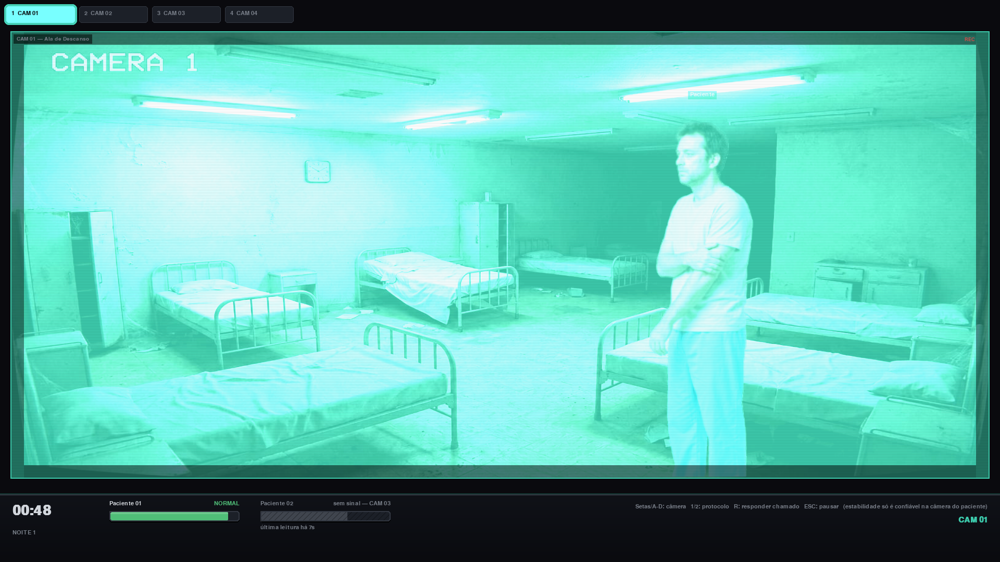
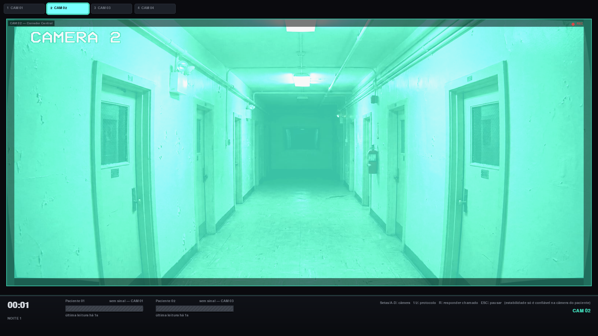
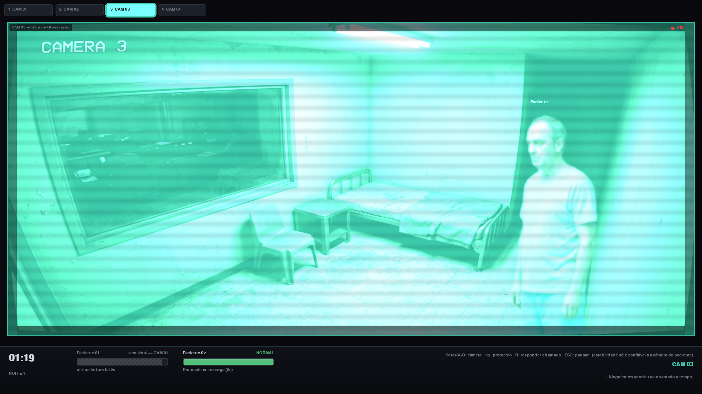
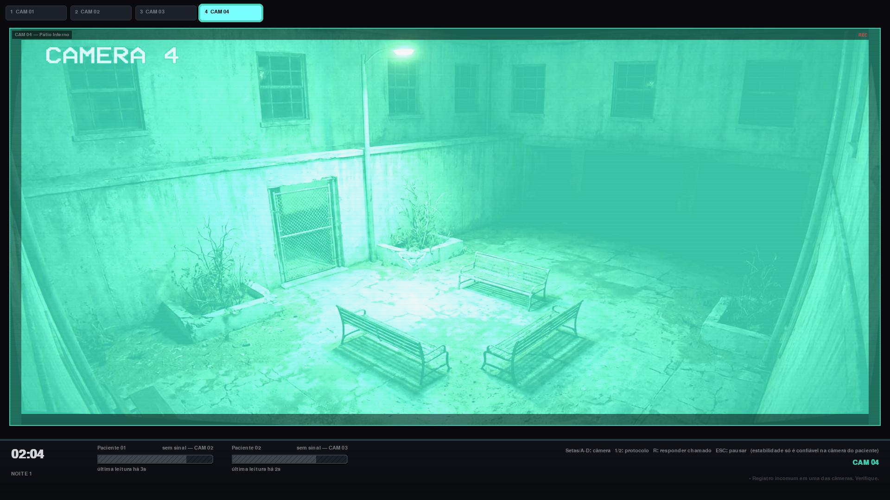

SISTEMA DE MONITORAMENTO — ATIVO
TURNO
NOTURNO
Um jogo de terror e vigilância.
Você acaba de assumir o turno da noite num hospital psiquiátrico desativado. Sua função é simples: observar os pacientes pelas câmeras de segurança e manter os protocolos em dia. Só que, aqui dentro, os pacientes não dormem — e nem sempre se movem por conta própria.
CAM 02 — CORREDOR CENTRAL
PROTOCOLO DE VIGÍLIA
Cada noite segue as mesmas regras. Elas só ficam mais difíceis de cumprir.
- 01Alterne entre as câmeras e observe cada leito com atenção.
- 02Acompanhe as leituras de sinal de cada paciente.
- 03Responda aos chamados antes que a instabilidade suba demais.
- 04Cuidado com interferências — nem toda falha de imagem é só falha técnica.
- 05Resista até o fim do turno.
CAM 03 — REGISTROS
O QUE AS CÂMERAS VIRAM




CAM 04 — PÁTIO INTERNO
FIM DE TURNO
O jogo está em desenvolvimento. Baixe a versão mais recente, entre no hospital e não confie em tudo que a câmera mostra.
VERSÃO 0.1 · NOITE 3
Requer Python + Pygame · Windows / Linux / macOS
⭳ Baixar Turno Noturno